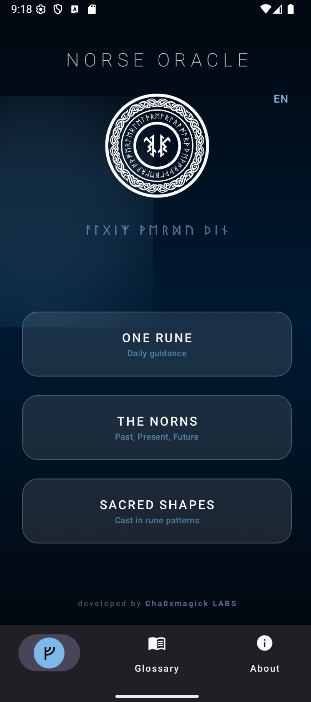
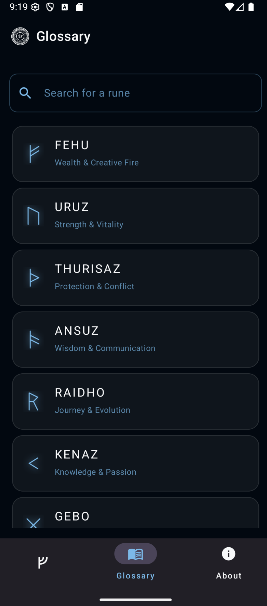
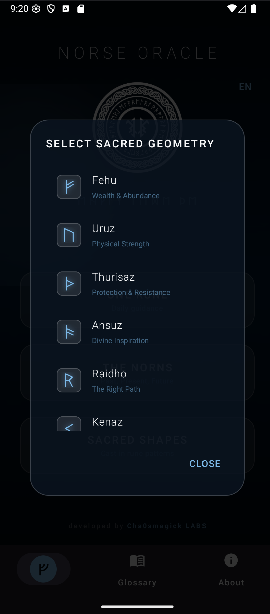
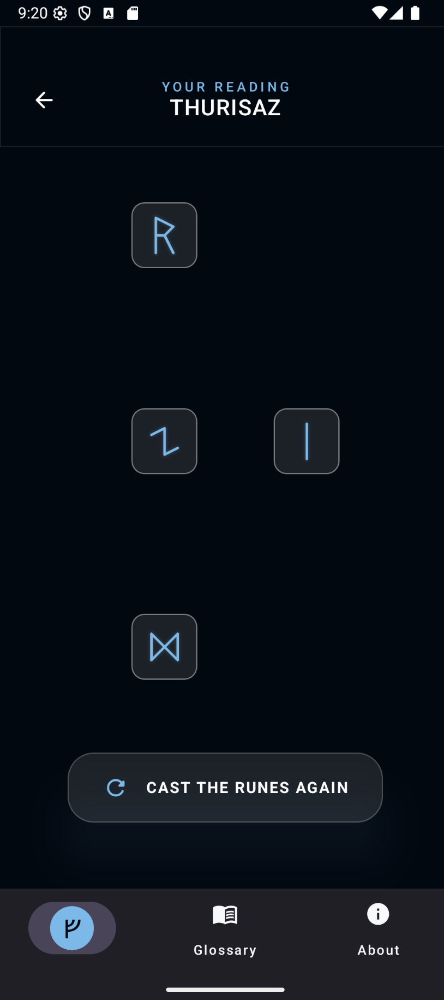

Norse Rune Oracle
Unlock Viking wisdom with 12+ rune spreads for love, wealth, protection, and daily guidance.




What Is Norse Rune Oracle? The Elder Futhark Divination App for Android
Every day you face decisions — about love, money, career, your path forward. The Norse Rune Oracle puts a thousand years of Viking wisdom in your hand, delivering clarity in seconds. Whether you are a seasoned rune reader or picking up a rune stone for the first time, this app transforms your phone into a living oracle powered by the 24 Elder Futhark runes.
Key Features for Real Guidance
- Daily Rune Inspiration: Pull a Rune of the Day every morning and receive instant cosmic guidance. Start each day with purpose and clarity.
- 12+ Advanced Casting Spreads: Odin's Rune for quick answers, The Three Norns for past-present-future, Love Reading for relationships, Wealth Cast (Fehu) for abundance, Protection Cast (Algiz) for boundaries, Luck Cast (Gebo) for opportunities, and more.
- Intention-Focused Readings: Write your question, set your intent, and receive a deeply personal, accurate interpretation every time.
- Complete Elder Futhark Library: Master all 24 runes with detailed profiles covering historical meaning, symbolic interpretation, upright and reversed positions, and practical applications.
- Immersive Norse Atmosphere: Elegant animations, dark mystical interface, and atmospheric sound design that transports you to a Viking-age grove.
Who Is the Norse Rune Oracle For?
- Beginners who want a guided, intuitive introduction to rune divination.
- Experienced Readers looking for a portable, feature-rich casting tool with multiple spreads.
- Spiritual Seekers who want daily guidance and deeper connection to Norse tradition.
Technical Specifications
- 24 Elder Futhark runes with full interpretations
- 12+ professional casting spreads
- Intention-based reading algorithm
- Reading history stored locally on device
- Fully offline — no internet required
- Zero ads, zero trackers, zero data collection
- Android 6.0+ | One-time purchase — $3.99 USD
Frequently Asked Questions
Do I need prior knowledge of runes to use this app?
Not at all. The app includes a complete rune library and guided interpretations, perfect for beginners while offering depth for experts.
Can I use it for specific questions about love or money?
Yes. The app features dedicated spreads for relationships, wealth, protection, and luck, each tailored for precise, actionable insights.
Is my reading history private?
Absolutely. All readings are stored locally on your device. No accounts, no cloud, no data collection.
Does the app work offline?
Yes. All features work without an internet connection. Your practice stays private and always accessible.
One-Time Purchase. Lifetime Access.
Download Norse Rune Oracle now for a single payment of $3.99 USD. No subscriptions, no in-app purchases. The runes are calling. Will you answer?
An Alphabet Is Not an Oracle
The Elder Futhark is twenty-four signs, fixed for about sixteen centuries, and that fixedness is the single most useful fact about rune work. It means the set can be learned rather than consulted. It also means a modern application offering sixty-four symbols is not offering you a richer tradition, it is offering you a different, self-authored system wearing historical clothes, and the two need to be kept apart if either is going to be worth anything. Below is what the twenty-four actually give you, where the expansions come from, and what a physical set changes about a daily practice.
Twenty-four signs, fixed, and learnable
The Futhark is the oldest runic alphabet, its sequence attested in Elder Futhark inscriptions from the second to the sixth centuries, and the order of the first sixteen signs has been stable since then. The complete twenty-four reference is the version worth having open, and the meanings guide is the version worth reading once. What a fixed alphabet buys you is the possibility of fluency: you can hold the set in your head and stop looking.
Learning it as a set rather than as a lookup table is the whole difference between reading runes and generating a list. Learning to read them daily treats it as a ten-minute practice, and the beginner's route covers the recognition stage. Casting methods is a separate problem and matters less than people assume; three identical tokens pulled from a bag is a defensible method and a bag of a hundred identical dice is not.
Casting, reading, and the question underneath
A rune reading is a structured way of putting a question into a form narrow enough to answer. That is the same operation as any other divinatory technique in this library, and it is why divination as a thinking practice is a better description of it than prediction. The runes do not know anything. What they do is force a question into the grammar of a sign you did not choose, which sometimes surfaces an objection you had not voiced.
How to read runes is the practical version of that grammar, and the daily practice version is the version that survives a real week. The distinction that matters for a beginner: a rune reading is a thinking tool with a randomised surface, and the value is in the constraint, not in the answer. Runes for a specific question shows the shape of a single-question reading, including how badly a vague question receives it.
The sixty-four-rune expansion, and what it is
Huld manuscript, discovered in 1930, contains a single inscription of sixteen signs in a known style and no interpretative text, and a great deal of the belief that the Huld sign system is ancient and complete rests on reading that inscription generously. The expanded sixty-four-rune set associated with modern chaos practice is a twentieth-century construction, and it is documented as one. The expansion system is the clearest statement of it available, and the treatise is the critical reading.
None of that makes the expansion worthless. It makes it an authored system, and an authored system is exactly what you want if you intend to learn it rather than inherit it. The direct comparison is the reference to read before choosing, and ritual use of the expanded set and divination with it show what it looks like in use. The cost is that a set you designed yourself will always agree with you, which makes it a good instrument for a question you have already answered and a poor one for a question you have not.
A set, a layout, and what the order is doing
Once the signs are known, a reading becomes a layout question, and layouts are where most of the craft sits. Layouts for a first reading covers the simplest useful ones. A single-position cast is the minimum viable version and it is enough for daily guidance, because a layout's value is in forcing you to look at the same question from a fixed number of angles.
For comparison with other systems, runes against tarot and the I Ching and runes against tarot directly are worth reading before you try to combine them. Combining systems that answer the same question in different grammars usually produces a louder answer, not a better one.
Bindrunes, and the difference from a sigil
A bindrune is a ligature: two or more signs drawn together to hold a specific sense. That makes it a fixed symbol with a fixed reading, which is the opposite of a sigil, where the reduction is private and the charge is what carries the meaning. A worked protection and prosperity bindrune shows the mechanics, and protection and prosperity workings shows what they are used for.
It is worth saying plainly that bindrunes are not sigils and the difference is not pedantic. A bindrune can be looked up, so it is shareable and stable. A sigil made by you is not, so it stays yours. If you want the second thing, a sigil is the instrument for it, and the sigil material in this library covers the mechanical side of why that is so. Runes used inside a chaos practice is the honest way to combine the two systems: the Futhark for fluency, sigils for the aims the alphabet is too public to hold.
The physical set, and the maintenance nobody schedules
A digital set and a physical set are not the same instrument. The physical one has weight, has edges, and gets moved, and those facts carry more of the practice than the glyphs do. Which sets to start with is the buying guide, and cleansing and charging the set is the maintenance step people skip and then wonder why the practice feels flat.
Two smaller practices are worth having. Meditating with the runes is the one that turns the set from a lookup into a vocabulary, and it is slow in the best way. Rituals with runes is the other, and the honest way to use it is as a set of fixed actions rather than as spell-craft. Different runic traditions compared is worth reading before you assume the Futhark is the only live lineage, because it is not, and the Viking oracle material is a different genre rather than a different alphabet.
What to do with a set you have had for a year
Eventually the point at which you draw stops being interesting is not a failure of the practice, it is the point at which the set has been consulted too often to be read honestly. The maintenance side of the work is covered in cleansing and charging a rune set, and the reading side in rune casting methods for beginners if the mechanics are still slippery. A set that is well looked after and drawn without hurry beats a rare set consulted in a panic.
The alphabet underneath the casting
Twenty-four signs with fixed names is a language you can learn, and a language you can learn is a different thing from a table you consult. The writing below covers the futhark, the casting methods, the expansion traditions and the maintenance of a physical set. Ancient Mythology and Speculation Ancient Mythology and Speculation Aruspecía: How Divination Is Actually Supposed to Work.
None of these replaces the others. Read the one that answers the question you actually arrived with, and leave the rest for the next time you find yourself back at this page without a question.
The twenty-four signs are old, documented, and free to learn properly. Everything built on top of them is either a method for using them or a claim about them, and the two are worth keeping in different boxes. If you can recite the Futhark in order from memory, you are further along than most people who have paid for a larger set.
Thirty entries from the library
- runes
-
Rune Casting and the Futhark: Reading the Marks Properly — The Elder Futhark was an alphabet before it was an oracle. Casting method, aettir structure, reading by position, and why bindrunes are the ancestor of sigil work.
All 24 Elder Futhark Runes: The Complete Reference (2026)
How to Create a Bindrune for Wealth Protection: Fehu
Futhark Runes Meaning: Complete Guide to the Elder Futhark
Chaos Hunter Runes vs Elder Futhark: Complete Comparative Analysis
How to Do the Nine-Rune Cast Digitally: Norse Rune
Rune Casting and the Futhark: A Casting Method That — The Elder Futhark, the three-rune spread, and a casting method you can repeat. Plus why bindrunes are the real ancestor of modern sigilisation, and what the…
Rune Spreads for Beginners: 5 Simple Layouts That Actually
Viking Oracle: Complete Guide to Norse Rune Divination for
Norse Rune Oracle App Review: Best Viking Rune Reader
Norse Rune Oracle: How to Build a Daily Practice
Norse Runes for Beginners: Elder Futhark Divination Guide
Runes for Chaos Magic: How to Combine Elder Futhark
The Best Runes for Love: Elder Futhark Romance Guide
Activating Chaos Hunter Runes: Complete Ritual Protocol for the
Chaos Hunter Runes: Complete System Introduction & Mastery Guide
Treatise of Chaos Hunter Runes PDF Review: 64 Runic
Fehu Rune Meaning: Wealth, Reversed & How to Use
Free Online Rune Reading: Instant Viking Divination (2026)
Free Rune Oracle vs. Norse Rune Oracle App: When
Learning to Read Runes: From Confusion to Daily Practice
Norse Rune Oracles: Different Traditions & Systems
Rune Divination for Daily Guidance: A Gentle Start (2026)
Best Rune Sets for Beginners: Materials, Quality & Value
Free Tengwar Transcriber and Rune Identity: When to Upgrade
How to Cleanse and Charge Runes: Complete Ritual Guide
Divination with Chaos Hunter Runes: Complete Practice Guide &
Protection and Prosperity Workings with Chaos Hunter Runes |
Rune Casting Methods & Tips for Beginners (2026)
Rune Meditation: Deepening Your Connection to Each Rune
Rune Rituals for Protection, Wealth & Prosperity Spells
- mythology-ancient
-
Ancient Mythology and Speculation — A complete working guide to ancient mythology and speculation covering ancient mythology and speculation. Includes step-by-step protocol, honest failure...
Ancient Mythology and Speculation — A complete working guide to ancient mythology and speculation covering ancient mythology and speculation. Includes step-by-step protocol, honest failure...
ATLÁNTIDA — A complete working guide to ATLÁNTIDA: what it is, the ancient mythology and speculation structure behind it, and the full protocol. Includes step-by-step...
- divination
-
Divination as a Thinking Practice, Not a Predictor — No system shows evidence of predictive access. What structured random systems do show is usefulness as thinking tools, and this is how to practise them without…
Aruspecía: How Divination Is Actually Supposed to Work — Divination works as a vocabulary for decisions, not as a prediction engine. Present-tense questions, the Barnum effect, and what consistency can and cannot tell you.